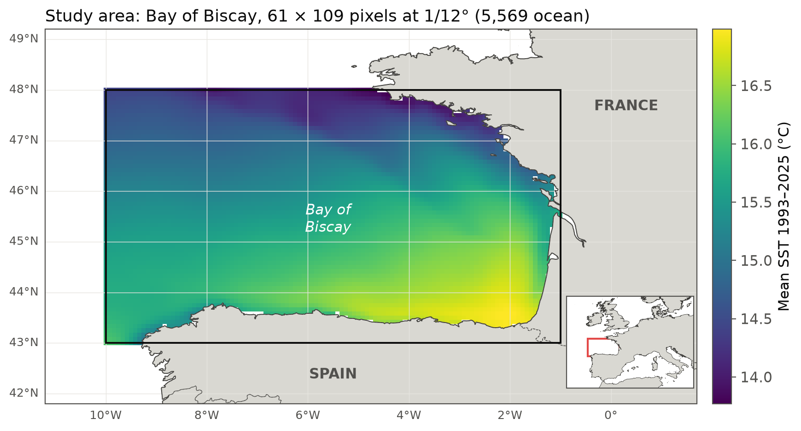
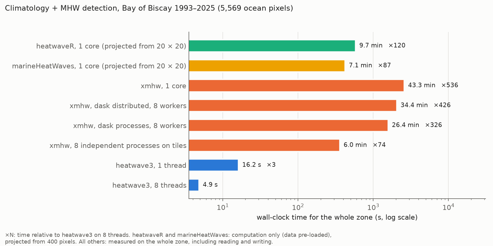
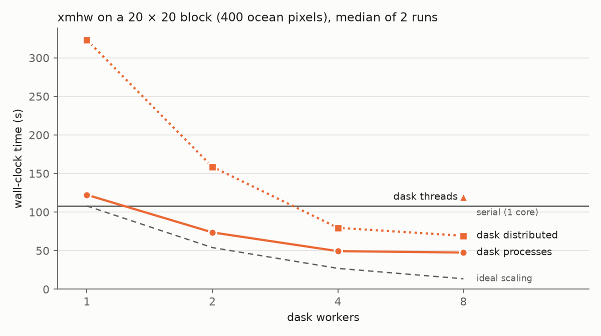

Performance benchmark: heatwave3 vs other MHW packages
Source:vignettes/articles/benchmark_packages.Rmd
benchmark_packages.RmdOverview
Marine heatwave (MHW) detection on a gridded product repeats the same per-pixel calculation, namely a climatology and a threshold, then event detection, for every ocean pixel. How long this takes decides whether a regional analysis is run once and stored, or re-run whenever a setting changes. Here we compare the wall-clock time and memory of four packages that implement the Hobday et al. (2016, 2018) definition, on the same file and the same machine, and check that they detect the same events:
-
heatwave3, C++ with
std::threadover pixels and direct NetCDF input and output; - heatwaveR, the R package heatwave3 is ported from, one pixel at a time;
- marineHeatWaves (Python), the original implementation of the definition, one pixel at a time;
- xmhw (Python), built on xarray and dask, which can run in parallel.
Because xmhw is the only other package designed to run in parallel, most of the work below is spent finding the fastest way to run it on the 8 cores of the test machine.
Data and settings
The input is the Copernicus Marine GLORYS12 reanalysis
(cmems_mod_glo_phy_my_0.083deg_P1D-m, dataset version
202311, doi:10.48670/moi-00021),
sea water potential temperature (thetao, °C) at the surface
level (0.494 m), for the Bay of Biscay (10°W to 1°W, 43°N to 48°N). The
grid is 61 × 109 pixels at 1/12°, of which 5,569 are ocean, with 12,053
daily values from 1993-01-01 to 2025-12-31. heatwave3 and xmhw read the
same float32 NetCDF-4 file, and heatwaveR and marineHeatWaves read the
same values for their 20 × 20 block (see below) from a CSV file.

All packages use the same settings: a climatology over 1993 to 2022, the 90th percentile threshold, an 11-day window (half-width 5 days), 31-day smoothing of the climatology and threshold, a minimum duration of 5 days, gaps of up to 2 days joined, and the Hobday et al. (2018) categories.
| Package | Version | Language and parallelism |
|---|---|---|
| heatwave3 | 1.4.1 (GitHub, commit 4691135) |
C++ core, std::thread over pixels |
| heatwaveR | 1.0.0 (GitHub, commit e0ae30d) |
R + C++, one pixel at a time |
| marineHeatWaves | 0.28 (GitHub, commit d7292bf) |
Python, one pixel at a time |
| xmhw | 1.0.0 (GitHub tag) | Python, xarray + dask |
heatwave3 was timed through its Python package, which calls the same C++ core as the R package. The machine is an Apple M2 (4 performance and 4 efficiency cores, 16 GB RAM) running macOS, with Python 3.12 and R 4.6.1.
Timing protocol
Each timed run is a fresh process, so no cache, thread pool or memory carries over between runs, and package imports are not timed.
- heatwave3 and xmhw run on the whole zone, and the time includes reading the input file, computing the climatology, detecting the events and writing all outputs to NetCDF. heatwave3 is the median of 3 runs after a discarded warm-up run. xmhw on the whole zone is a single run per configuration (the serial run takes 43.3 min).
- heatwaveR and marineHeatWaves process one pixel at a time and are too slow to run on the whole zone. Each runs on a 20 × 20 block of ocean pixels with the data already in memory (computation only, which favours them), and the time is projected to the whole zone as block time / 400 × 5,569. The cost per ocean pixel is constant here, since every ocean pixel has the full series. The fastest of 3 runs is used.
- Peak memory is the peak resident set size of the run, summed over all processes where a run uses several (xmhw with dask workers or on tiles).
Results

| Configuration | Climatology (s) | Detection (s) | Total (s) | Peak RAM (GB) | × heatwave3 (8 threads) | Timed |
|---|---|---|---|---|---|---|
| heatwaveR, 1 core (projected from 20 × 20) | 390.2 | 185.7 | 575.9 | 120 | computation only | |
| marineHeatWaves, 1 core (projected from 20 × 20) | 419.3 | 87 | computation only | |||
| xmhw, 1 core | 2,460.4 | 130.0 | 2,599.0 | 4.1 | 541 | read + compute + write |
| xmhw, dask distributed, 8 workers | 1,971.2 | 84.5 | 2,064.2 | 10.8 | 430 | read + compute + write |
| xmhw, dask processes, 8 workers | 1,516.1 | 59.3 | 1,583.4 | 5.5 | 330 | read + compute + write |
| xmhw, 8 independent processes on tiles | 361.0 | 15.6 | 75 | read + compute + write | ||
| heatwave3, 1 thread | 13.1 | 2.9 | 16.0 | 2.1 | 3 | read + compute + write |
| heatwave3, 8 threads | 3.1 | 1.7 | 4.8 | 2.3 | 1 | read + compute + write |
heatwave3 processes the whole zone in 4.8 s on 8 threads and in 16.0 s on one. On a single core it is 36 times faster than heatwaveR and 162 times faster than xmhw, even though the heatwaveR projection leaves out reading the file. The fastest xmhw configuration on 8 cores takes 6.0 min, i.e. 75 times as long as heatwave3 on 8 threads.
xmhw on 8 cores
How xmhw runs in parallel
xmhw parallelises over grid cells, not over chunks of the input
array. Its threshold() stacks the ocean cells and builds
one small dask computation per cell, and detect() builds
one dask.delayed task per cell. Each function then runs a
single dask.compute() over all cells. Two consequences
follow. First, chunking the input DataArray adds no
parallelism, and it makes every per-cell task read from the file lazily,
so the input should be loaded into memory first. Second, the number of
cells processed at once is set by the dask scheduler, and with
no scheduler configured dask uses its threaded scheduler on all cores,
so an xmhw run without explicit settings is already multi-threaded.
It is important to note one step that is easy to miss.
threshold() returns its climatology as lazy dask arrays
that carry the computations of every cell. Passed to
detect() unchanged, they are sliced per cell, and the time
dask spends optimising the resulting task graph grows with the square of
the number of cells: on 400 cells, detection took 0.72 s per cell this
way and ca. 0.02 s per cell once the climatology was loaded with
.load(). Every xmhw timing in this article loads the
climatology before detect(), as below.
import dask
import xarray as xr
from xmhw.xmhw import threshold, detect
sst = xr.open_dataset("biscay_glorys12_full_1993-2025.nc")["thetao"].load()
with dask.config.set(scheduler="processes", num_workers=8):
clim = threshold(sst, climatologyPeriod=[1993, 2022]).load()
mhw = detect(sst, clim["thresh"], clim["seas"], minDuration=5,
joinGaps=True, maxGap=2)Which scheduler
We timed xmhw on the 20 × 20 block (400 ocean pixels) with each dask
scheduler, namely serial (synchronous), threads, the
multiprocessing scheduler (processes) and a
dask.distributed LocalCluster with one thread
per worker process, from 1 to 8 workers (median of 2 runs).

| Scheduler | Workers | Climatology (s) | Detection (s) | Total (s) |
|---|---|---|---|---|
| distributed | 1 | 308.9 | 13.0 | 323.2 |
| distributed | 2 | 149.0 | 8.3 | 158.7 |
| distributed | 4 | 72.7 | 5.5 | 79.6 |
| distributed | 8 | 62.6 | 5.2 | 69.3 |
| processes | 1 | 110.9 | 10.2 | 122.3 |
| processes | 2 | 65.9 | 6.5 | 73.6 |
| processes | 4 | 43.5 | 4.6 | 49.3 |
| processes | 8 | 41.9 | 4.4 | 47.5 |
| synchronous | 1 | 97.9 | 8.8 | 107.9 |
| threads | 8 | 107.7 | 10.3 | 119.3 |
The threaded scheduler gains nothing (119 s on 8 threads against 108
s serial). This is because the per-cell work in xmhw is mostly Python
and xarray overhead (the climatology alone makes 366 small
quantile() calls per cell), which holds Python’s global
interpreter lock, so only one thread runs at a time. Worker processes
avoid the lock but have to receive each cell’s data and computation from
the parent process. With dask.distributed this transfer
costs more than the work itself (323 s on one worker), and the time then
falls with more workers. The multiprocessing scheduler has less overhead
and is the fastest dask option, at 48 s on 8 workers, but it gains
little beyond 4 workers. This is consistent with the parent process,
which builds every cell’s computation and assembles the results on a
single core, setting the pace, and with the M2’s 4 efficiency cores
being slower than its 4 performance cores.
Cost per cell grows with the domain
Serial xmhw takes 0.24 s per cell for the climatology on the 400-cell
block, but 0.44 s per cell on the whole zone, whereas detection stays
near 0.023 s per cell. This is consistent with threshold()
running a single dask.compute() over the computations of
all cells, which the parent process prepares and optimises on one core
before any worker starts, and whose cost grows faster than the number of
cells. It also explains why the dask schedulers gain less on the whole
zone than on the block: with 8 workers, the multiprocessing scheduler is
2.3 times faster than serial on the block and 1.6 times faster on the
whole zone.
Upper bound: independent processes
To see how fast xmhw could be on 8 cores without dask overhead, we
also split the zone into 8 latitude strips with about the same number of
ocean pixels and ran 8 serial xmhw processes at the same time, one per
strip. This gives 6.0 min for the whole zone (from the start of the
first process to the end of the last), against 43.3 min serial, 26.4 min
with the multiprocessing scheduler and 34.4 min with
dask.distributed. It leaves the output as 8 separate files,
which then have to be combined, and the 8 processes together used 15.6
GB of memory at their peak, nearly all of the 16 GB of the test
machine.
Agreement of the detected events
On the 20 × 20 block, each package’s events are paired with heatwave3’s on pixel, start date and end date, and the paired metrics compared (intensities at 4 decimals, as heatwave3 and heatwaveR round them).
| Package | Events | Events (heatwave3) | Paired (same dates) | Peak date (%) | Duration (%) | Mean intensity (%) | Max intensity (%) | Cumulative intensity (%) | Cum. per day, median diff. (°C) | Cum. per day, max diff. (°C) | Category (%) |
|---|---|---|---|---|---|---|---|---|---|---|---|
| heatwaveR | 28,026 | 28,026 | 28,026 | 100.00 | 100 | 100.00 | 100.00 | 99.94 | 0 | 0.00004 | 99.99 |
| marineHeatWaves | 28,018 | 28,026 | 27,867 | 99.92 | 100 | 84.11 | 86.62 | 62.88 | 0.000009 | 0.001 | 99.97 |
| xmhw | 28,021 | 28,026 | 27,873 | 99.92 | 100 | 88.12 | 92.78 | 71.68 | 0.000007 | 0.003 | 99.95 |
The two columns after the cumulative intensity give its difference per event day, namely the absolute difference of each paired event’s cumulative intensity divided by its duration, so that differences of long and short events can be compared on the same scale.
heatwaveR and heatwave3 detect the same 28,026 events, and every
event has an exact partner. The cumulative intensities that differ at
the fourth decimal come from the CSV file, which holds the temperatures
to 6 decimals; given the float32 values of the NetCDF file, heatwaveR
agrees with heatwave3 on every cumulative intensity. The two categories
that differ belong to events whose peak lies within rounding of a class
boundary, because detect_event(categories = TRUE) rounds
the temperatures to 4 decimals before it assigns the category, whereas
heatwave3, like heatwaveR::category(), uses the
temperatures as read. marineHeatWaves and xmhw each compute their own
climatology, so their thresholds differ slightly from heatwave3’s. This
means that 0.5% (marineHeatWaves) and 0.5% (xmhw) of their events start
or end on a different day, and that paired mean intensities differ by a
median of 0.00003 °C and 0.00003 °C respectively (at most 0.001 °C and
0.003 °C). These differences are concentrated in two periods of the
year, namely around 29 February, which each package handles in its own
way, and, for marineHeatWaves only, around the new year, where its
window for the last days of the climatology period takes data from the
following January. Durations agree in every pair. Across the whole zone,
xmhw finds 394,461 events against heatwave3’s 394,613, with the same
count in 92.7% of pixels.
Caveats
- One machine and one region. The ratios depend on the CPU (the M2 mixes performance and efficiency cores), the disk and the grid size.
- The heatwaveR and marineHeatWaves times are projections that exclude reading the data, which favours them.
- xmhw on the whole zone is a single run per configuration. On the
400-pixel block, the two runs of each configuration agreed to within 5%.
In an earlier session, three
dask.distributedruns on the block were up to 3 times slower than these, for reasons we did not identify; they are not included. - heatwave3 writes a CF-compliant event table and gridded climatology, whereas xmhw writes its climatology and an event array padded to the largest number of events in any cell. The output formats differ, but both are written to NetCDF within the timed run.
Reproducing the benchmark
The calls below are the ones timed (heatwave3 shown in R; the Python package takes the same arguments).
library(heatwave3)
sst_file <- "biscay_glorys12_full_1993-2025.nc"
ts2clm3(sst_file, name = "biscay", climatologyPeriod = c("1993-01-01", "2022-12-31"),
var_name = "thetao", n_threads = 8)
detect_event3(sst_file, name = "biscay", var_name = "thetao", minDuration = 5,
maxGap = 2, category = TRUE, hemisphere = "north", n_threads = 8)
# heatwaveR, per pixel (ts: data.frame with t and temp)
clm <- heatwaveR::ts2clm(ts, climatologyPeriod = c("1993-01-01", "2022-12-31"))
ev <- heatwaveR::detect_event(clm, categories = TRUE, S = FALSE)# marineHeatWaves, per pixel (t: ordinal days, sst: numpy array)
import marineHeatWaves as mhw
events, clim = mhw.detect(t, sst, climatologyPeriod=[1993, 2022],
minDuration=5, joinAcrossGaps=True, maxGap=2)The xmhw call is shown above. The result files behind every table and
figure are in vignettes/articles/benchmark-data/.
References
Hobday, A. J., et al. (2016). A hierarchical approach to defining marine heatwaves. Progress in Oceanography, 141, 227–238. https://doi.org/10.1016/j.pocean.2015.12.014
Hobday, A. J., et al. (2018). Categorizing and naming marine heatwaves. Oceanography, 31(2), 162–173. https://doi.org/10.5670/oceanog.2018.205